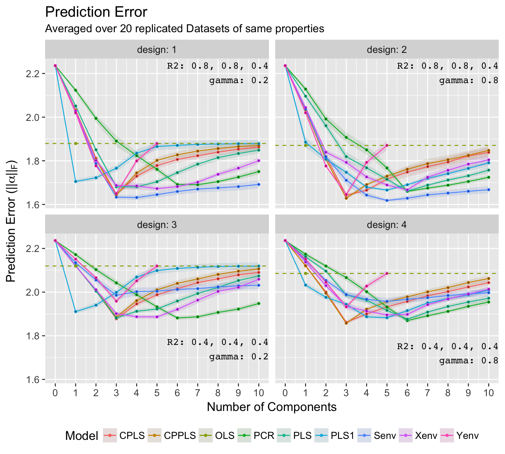

This section demonstrates an application of simrel-m in order to compare different estimation methods on the basis of prediction error. For the comparison, we have considered four well established estimation methods.
We have also considered four relatively new estimation methods
From the possible combinations of two levels of coefficient of determination \((R^2)\) and two levels of gamma (factor that controls the multicollinearity in predictor variable), four simulation designs (design 1, design 2, design 3, design 4) are prepared. Replicating each design 20 times, 80 datasets with five response variables \((m=5)\) and 16 predictor variables \((p = 16)\) are simulated using the method discussed in this paper. It is also assumed that three principle components of response variables (\(w_1, w_2\) and \(w_3\)) completely describes the variation present in five response variables (\(y_1 \ldots y_5\)). The four designs are presented in the Table~4.1. All datasets contains 100 sample observations and out of 16 predictor variables, three disjoint set of five predictor variables are relevant for response components \(w_1, w_2\) and \(w_3\). Further, predictor components \(z_1\) and \(z_6\) are relevant for response component \(w_1\), predictor components \(z_2\) and \(z_5\) are relevant for response component \(w_2\) and predictor component \(z_3\) is relevant for response component \(w_3\). In addition, following the discussion about rotation of response space, \(w_1\) is rotated together with \(w_4\) and \(w_2\) is rotated together with \(w_5\).
Table 4.1: Parameter setting of simulated data for model comparison
| Design1 | Design2 | Design3 | Design4 | |
|---|---|---|---|---|
| Decay of eigenvalue \((\gamma)\) | 0.2 | 0.8 | 0.2 | 0.8 |
| Coef. of Determination \((\rho^2)\) | 0.8, 0.8, 0.4 | 0.8, 0.8, 0.4 | 0.4, 0.4, 0.4 | 0.4, 0.4, 0.4 |
For each method, an estimate of test prediction error is computed as,
\[\underset{m \times m}{\boldsymbol{\alpha}} = \left( \hat{\boldsymbol{\beta}} - \boldsymbol{\beta} \right) ^t \boldsymbol{\Sigma}_{xx} \left( \hat{\boldsymbol{\beta}} - \boldsymbol{\beta} \right) + \boldsymbol{\sigma}^2\]
where, \(\hat{\boldsymbol{\beta}}\) is an estimate of true regression coefficient \(\boldsymbol{\beta}\) and \(\boldsymbol{\Sigma}_{xx}\) is the true covariance structure of predictor variable obtained from simrel-m. Also, \(\boldsymbol{\sigma}^2\) is the true minimum error of the model. Here \(\hat{\beta}\) vary accross different estimation methods while the remaining terms are same for each dataset design. Further, an overall prediction error of all responses is measured by the Forbenius norm \(\left\lVert\alpha\right\rVert_F \in \mathbb{R}^{m \times m}\) defined as (Golub and Van Loan 2012Golub, Gene H, and Charles F Van Loan. 2012. Matrix Computations. Vol. 3. JHU Press.),
\[\left\lVert\alpha\right\rVert_F = \sqrt{\sum_{i = 1}^m \sum_{j = 1}^m {\left|a_{ij}\right|^2}}.\]
The minimimum prediction error (measured as discussed above) for nine estimation methods averaged over 20 replications of four designs are in Table~4.2. The table also shows that the number of components a method has used in order to obtain the minimum of average prediciton error.
Table 4.2: Minimum average prediction error (number of components, prediction error)
| Model | Design: 1 | Design: 2 | Design: 3 | Design: 4 |
|---|---|---|---|---|
| CPLS | (3, 1.65) | (3, 1.64) | (3, 1.88) | (3, 1.86) |
| CPPLS | (3, 1.64) | (3, 1.63) | (3, 1.89) | (3, 1.86) |
| OLS | (1, 1.88) | (1, 1.87) | (1, 2.12) | (1, 2.09) |
| PCR | (7, 1.69) | (6, 1.66) | (6, 1.88) | (6, 1.87) |
| PLS | (4, 1.68) | (6, 1.66) | (3, 1.88) | (6, 1.88) |
| PLS1 | (1, 1.71) | (5, 1.67) | (1, 1.91) | (5, 1.88) |
| Senv | (4, 1.63) | (5, 1.62) | (3, 1.99) | (5, 1.96) |
| Xenv | (5, 1.67) | (6, 1.67) | (5, 1.89) | (5, 1.9) |
| Yenv | (3, 1.65) | (3, 1.65) | (3, 1.96) | (3, 1.93) |
Table~4.2 shows that simulteneous envelope has prediction error of 1.63 and 1.62 in design 1 and design 2 respectively which is smaller than other methods. However the model was not able to show the same performance in design 3 and design 4. Cannonical PLS and Cannonically Powered PLS has out performed other methods in these designs. Here, the difference between CPLS and CPPLS is minimal. These methods has also shown a fair performance in the first two designs with only three components. A detail picture of prediction error for each estimation method obtained for each additional component is shown in Figure~4.1. Although design 2 and design 4 has higher level of multicollinearity, the performance of the estimation methods is indifferent to its effect. Since all the methods, except OLS, are based on shrinking of estimates, they are less influenced by multicollinearity problem.
Figure 4.1: Minimum of Average Prediction Error
Above analysis has answered some questions such as how methods works when there exist a true reduced dimension in response space but also arised question like why they perform differently. For example, the reduced performance of simulteneous envelope going from design with \(R^2 = (0.8, 0.8, 0.4)\) to design with \(R^2 = (0.4, 0.4, 0.4)\) has arised question such as – Does the performance of the method depends on \(R^2\) or it is a random situation? Since, this paper is intended for a demonstration of how simrel-m can be used in scientific study, a more elaborative study is needed in order to answer such question which simrel-m can help as an useful instrument.